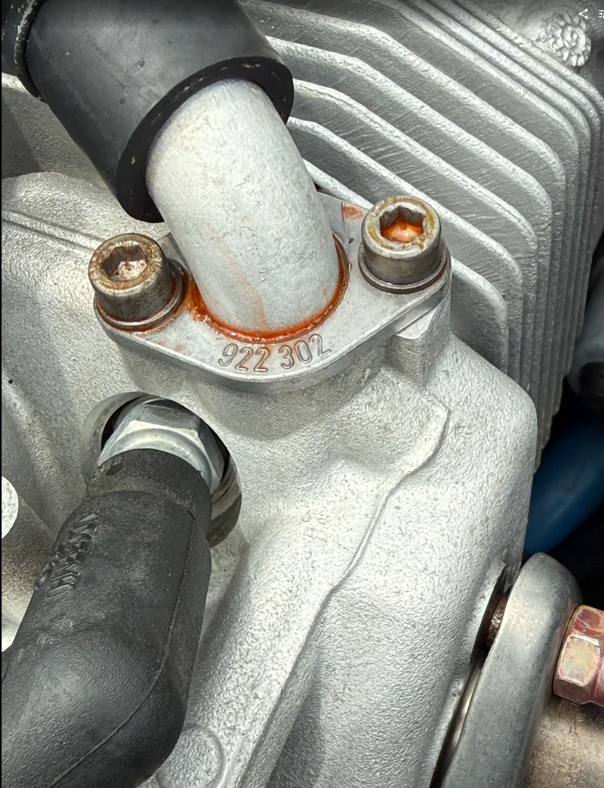

Fuel System Rubber
Fuel hoses, fuel-line condition, pump venting context, clamps, routing, chafe, heat exposure, and records.
ROTAX Five-Year Rubber Package
The five-year rubber replacement is planned as an installed-system package, not one visible hose. Scope can include fuel, oil, cooling, intake, carburetor, pump, belt, clamps, refill, synchronization, run, leak-check, and records.

Package Scope
Applicability depends on the engine, aircraft manufacturer instructions, installed configuration, and records. The package structure keeps a calendar-driven rubber item from being treated as a random leak repair.
Fuel hoses, fuel-line condition, pump venting context, clamps, routing, chafe, heat exposure, and records.
Coolant hoses, expansion-tank and cap context, clamp condition, seepage, refill, purge, and leak-check planning.
Oil hose condition, oil cooler routing, fittings, residue, chafe points, and aircraft-specific access or routing issues.
Carb sockets, intake connecting hoses, airbox connections, cracks, distortion, leak possibility, and synchronization effects.
Fuel, oil, and coolant residue can move with airflow, heat, gravity, and cleaning history. Source tracing comes before parts guessing.
Post-work planning can include refill, run, leak-check, carburetor synchronization when disturbed, and a clean records path.
Major Planning Package
The package can reach fuel, oil, cooling, intake, carburetor, pump, belt, clamps, refill, run, leak-check, synchronization, and records. Access and aircraft configuration decide the final scope.
Planning context: This is commonly a multi-thousand-dollar planning item and can approach or exceed about $4,000 on some installations depending on access, hose routing, parts, fluids, clamps, carburetor parts, fuel-pump requirements, and documentation needs. Final scope is determined after aircraft, engine, installation, and records review.
ROTAX maintenance instructions treat the five-year rubber requirement as a time-limit item independent of visual inspection. Planning starts with the manual-required rubber categories, then narrows to the aircraft, engine configuration, installed systems, service instructions, and records.
Do not use this website as maintenance instructions. Current ROTAX manuals, service instructions, aircraft maintenance manuals, operating limitations, and logbook history control the actual work scope.
Common planning scope to verify against current ROTAX instructions, the aircraft maintenance manual, engine configuration, installed systems, and logbook history:
Every item must be verified for the engine family, installation, records, and work scope. Not every listed item applies to every aircraft.
What You May Notice
What to Send First
Package Process
The goal is a clean maintenance path: identify the aircraft and installed configuration, review the age and evidence, define scope, complete or coordinate the work, and leave records that explain what was done.
Aircraft, location, engine family, S-LSA/E-LSA/experimental status, and known records.
Rubber age, routing, clamps, leaks, residue, heat, chafe, and prior maintenance.
Fuel, oil, coolant, intake, pump context, refill/run, sync, leak-check, and documentation needs.
Logbook and owner-file clarity so the next annual or condition inspection can understand the work path.
Leak Review Focus
Fuel, coolant, and oil residue can move with airflow, heat, gravity, and cleaning history. A leak review needs fluid type, location, recurrence, known hose age, recent maintenance, and when the residue appears.

Start the Package Review
The first request can stay simple: aircraft, location, known hose age if available, and the visible concern. Additional photos, records, or part details can be requested after intake.
Send Aircraft Details